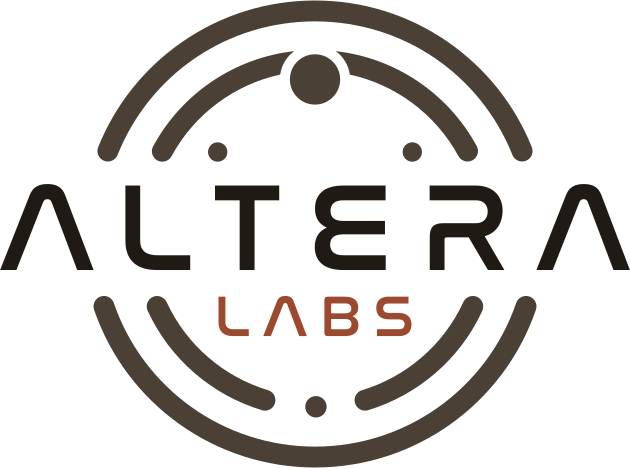
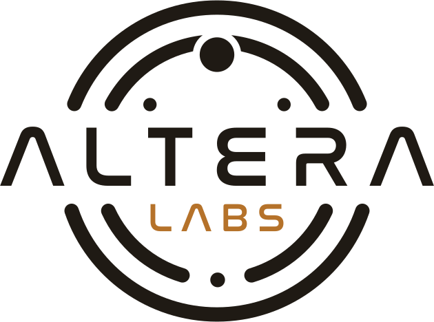
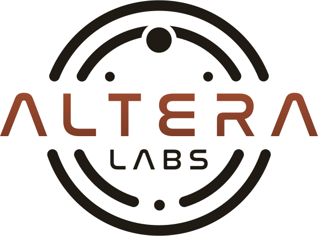
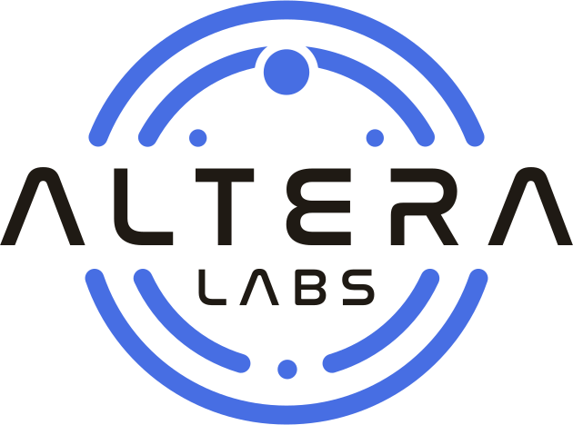

CURRENT (duo, in nav now)ink ALTERA + ink rings + terracotta LABS

Refined Two-Tone (Ink + Terracotta)Rings/dots: warm-ink #4a4036 (a lighter, warm dark brown so the orbit recedes). ALTERA wordmark: solid ink #1f1a14 (the hero). LABS: terracotta #9c4a2

Altera Logo — Ink + Ochre (Reading Room)Rings/dots (orbit-gradient): ink #1f1a14. ALTERA wordmark (text-silver-gradient, both stops): ink #1f1a14. LABS (solid fill): ochre #b5722a.

Reading Room — Terracotta EditorialALTERA wordmark in terracotta (#9c4a2f, with a subtle gradient down to #7a3a25 for depth); the orbital rings and dots in ink (#1f1a14); the LABS subte

Reading Room — Ink Wordmark, Blue OrbitALTERA wordmark (text-silver-gradient, both #ffffff and #e2e2e7 stops) = ink #1f1a14; LABS solid fill = ink #1f1a14; orbit rings + dots (orbit-gradien